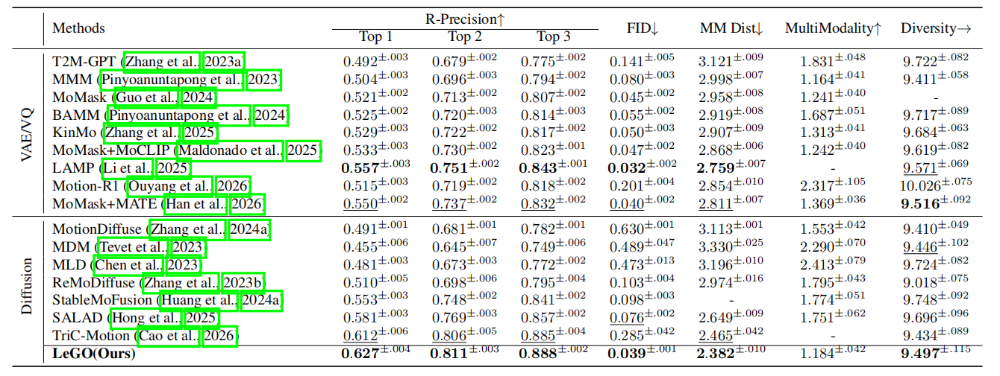
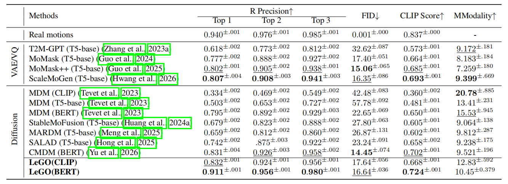
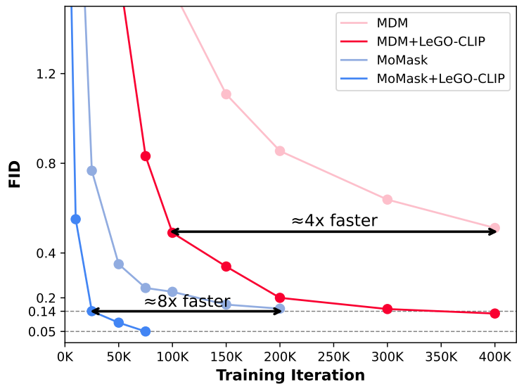
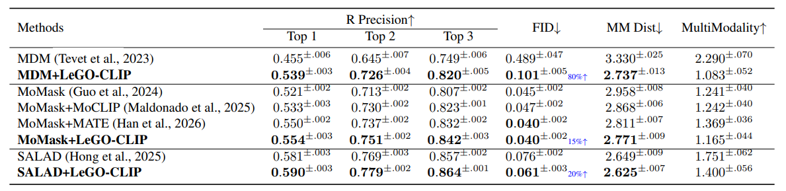
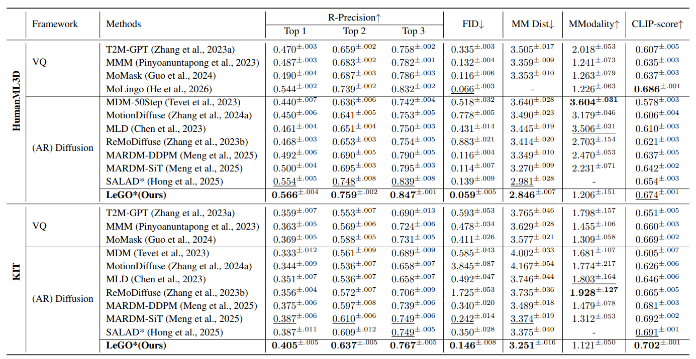

Text-to-motion generation aims to synthesize realistic human motion sequences from natural language descriptions. Existing methods typically use a text encoder separately pretrained on proxy objectives. However, such encoders struggle to capture subtle dynamic nuances, leading to inadequate text representations for motion generation. We argue that effective text representations for motion generation should be generation-oriented, i.e., optimized to better support the synthesis of high-fidelity, text-aligned motion sequences. Accordingly, we propose LeGO, a co-optimization framework that Learns Generation-Oriented text representations for motion generation and derives LeGO-CLIP, a motion-specialized text encoder. Specifically, LeGO adapts a pretrained CLIP text encoder into LeGO-CLIP by jointly optimizing it with a motion diffusion model, allowing the encoder to receive differentiable feedback from generation quality through two semantic consistency constraints: a motion consistency constraint and a text consistency constraint. Comprehensive experiments demonstrate the effectiveness of our method from three perspectives: 1) Performance: It achieves state-of-the-art results on HumanML3D, KIT-ML and SnapMoGen benchmarks; 2) Efficiency: It significantly accelerates convergence, requiring up to 8× fewer training iterations; and 3) Transferability: LeGO-CLIP serves as a plug-and-play replacement and consistently improves the performance of diverse motion generation models. The source code will be made publicly available.

Overview of the LeGO framework. LeGO co-optimizes the LeGO-CLIP text encoder with a motion diffusion model. A pair of text and motion projectors is first trained to build a shared semantic space for text and motion. The adapted text encoder then receives differentiable feedback from generation quality through two semantic consistency constraints—a motion consistency constraint and a text consistency constraint—so that the learned text representations are optimized for motion synthesis rather than a standalone proxy objective.

Quantitative comparisons on the HumanML3D test set. LeGO achieves state-of-the-art FID and R-Precision, reducing MDM's FID from 0.489 to 0.039 and improving its R-Precision from 0.749 to 0.888 under the same diffusion backbone.

Quantitative comparisons on the SnapMoGen test set, where the text encoder used by each method is indicated in parentheses. LeGO with a BERT text encoder achieves the best R-Precision and CLIP Score among all compared methods.

Replacing the vanilla CLIP encoder with LeGO-CLIP yields superior performance and markedly faster convergence. MDM and MoMask reach comparable performance with 4× and 8× fewer training iterations, respectively.

LeGO-CLIP serves as a plug-and-play replacement for the vanilla CLIP encoder. Without changing the architecture, training schedule, or inference setting, it consistently improves MDM, MoMask, and SALAD on HumanML3D, with up to 80% relative FID reduction.

LeGO is trained with the standard 263-dimensional motion representation. For zero-shot evaluation on the MARDM-67 benchmark, we directly take the first 67 dimensions of generated motions and feed them into the MARDM evaluator without any additional post-finetuning. LeGO still maintains state-of-the-art performance, surpassing methods directly trained on the essential representation by a large margin.